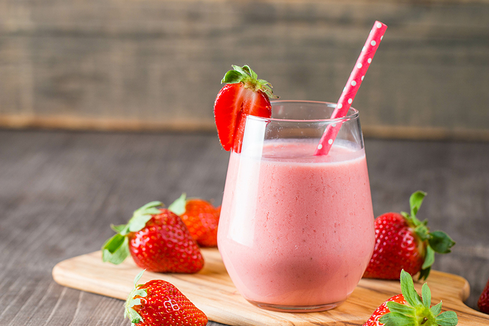
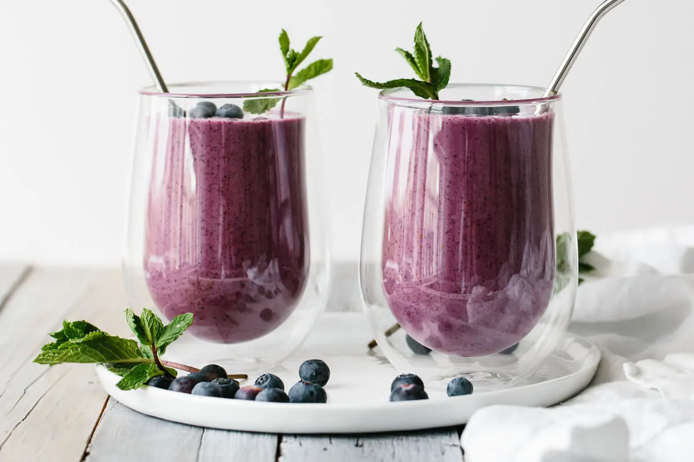
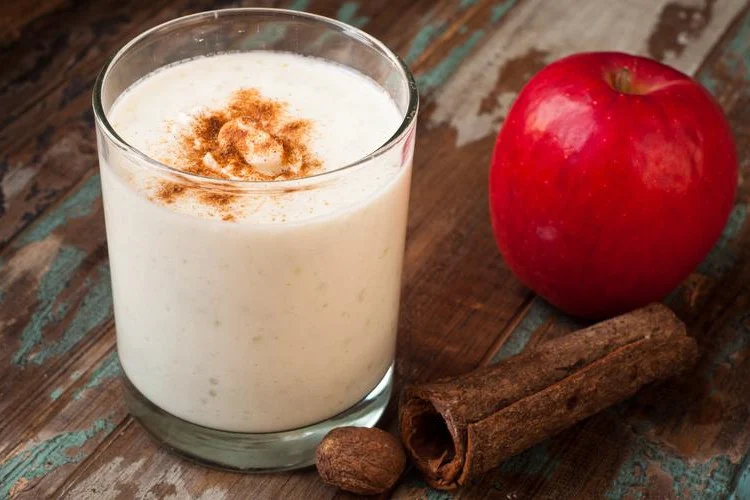
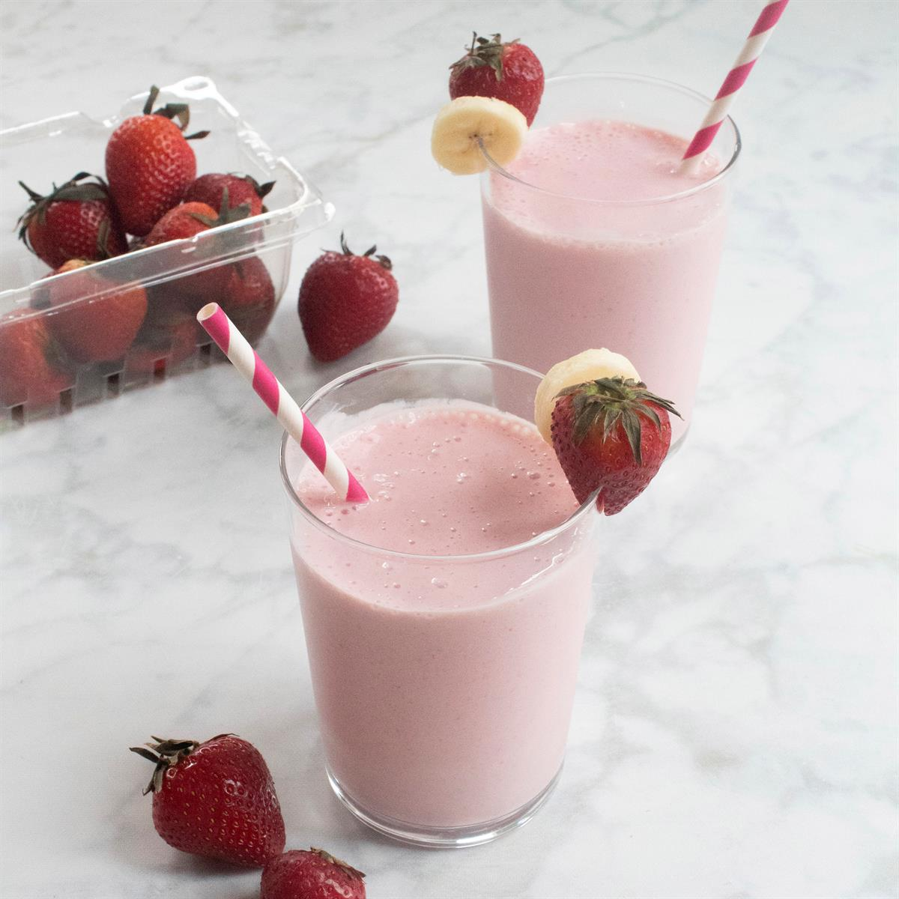

Strawberry smoothie

Ingredients
- 3 cups frozen strawberries
- 1 1/2 cups milk, any variety
- 1/3 cup strawberry jam
How to make
- Place the frozen strawberries, strawberry jam and milk in the blender.
- Place the lid over the top.
- Puree until smooth.
Blueberry smoothie

Ingredients
- 1 1/2 cups apple juice can substitute white grape juice, dairy milk, or almond milk
- 1 banana halved
- 1 1/2 cups frozen blueberries
- 3/4 cup vanilla Greek yogurt
- fresh blueberries and mint sprigs for garnish optional
How to make
- Place the apple juice, banana, blueberries and Greek yogurt in a blender.
- Blend until completely smooth.
- Pour into glasses and serve, topped with blueberries and mint if desired.
Oatmeal smoothie

Ingredients
- 1/4 cup old-fashioned oats or quick oats
- 1 banana chopped into chunks and frozen
- 1/2 cup unsweetened almond milk
- 1 tablespoon creamy peanut butter
- 1/2 tablespoon pure maple syrup plus additional to taste
- 1/2 teaspoon pure vanilla extract
- 1/2 teaspoon ground cinnamon
- 1/8 teaspoon kosher salt don’t skip this, as it makes the oatmeal pop!
How to make
- Place the oats in the bottom of a blender and pulse a few times until finely ground.
- Add the banana, milk, peanut butter, maple syrup, vanilla, cinnamon, and salt.
- Blend until smooth and creamy, stopping to scrape down the blender as needed.
- Taste and add additional sweetener if you’d like a sweeter smoothie. Enjoy immediately.
Cinnamon Apple smoothie

Ingredients
- 500 ml almond milk
- 1 tablespoon oats
- 3 apples cored and diced
- ¼ teaspoon cinnamon Plus a little extra to sprinkle on top
- 2 teaspoon maple syrup add more or less to taste
How to make
- Before making the smoothie put the almond milk in a jug with the oats and leave to soak.
- Put all the ingredients in a blender and blitz until smooth.
- Taste and add extra maple syrup or cinnamon to taste.
Greek Yogurt Strawberry smoothie

Ingredients
- 1 cup whole frozen strawberries about 10 large berries or mixed berries of choice
- 1 medium ripe banana peeled and cut in half
- ¾ cup nonfat plain Greek yogurt
- 2 tablespoons oatmeal
- 1 tablespoon peanut butter or almond butter
- 1 to 2 teaspoons honey
- Water or unsweetened almond milk as needed
How to make
- Place all of the ingredients but the ice in a blender: strawberries, banana, Greek yogurt, oatmeal, peanut butter, and 1 teaspoon honey.
- Blend until smooth. Depending upon the size and power of your blender, you may need to stop it and scrape down the pitcher a couple of times. If the mixture is too thick to blend, splash in a little water or almond milk, stir to move the contents of the blender around, and blend again; if it is too thin, blend in a few ice cubes.
- Taste and add additional honey if you would like the smoothie sweeter. Pour into a glass and enjoy!